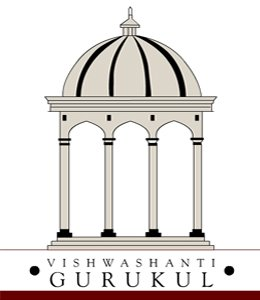

About Me
Hi, I'm Shourya Patel — a passionate student currently pursuing biotechnology. I have a strong academic background in science, research, and innovation with interests in environmental science and sustainable development. I enjoy learning through exploration and hands-on work, especially in the field of biology and technology.
Education
School: MIT Pune's Vishwashanti Gurukul (An IB World School)
I joined MIT Pune's Vishwashanti Gurukul in 2017 as a residential student in PYP 5 and continued through to IBDP Year 2. Over the years, the boarding environment and IB curriculum helped me grow into an independent, holistic learner, while nurturing my academic strengths and interdisciplinary thinking....
Over the years as an IB student at MIT Pune's Vishwashanti Gurukul, I gradually evolved into a more independent, holistic, and disciplined learner. The rigor and breadth of the IB curriculum challenged me to develop strong self-management and time management skills—balancing coursework, CAS commitments, and multiple deadlines across six demanding subjects. Through this, I learned to prioritize tasks, stay organized, and adapt to academic pressure. My research and inquiry skills grew steadily across the MYP and DP. Starting from the Personal Project in MYP 5 to the Extended Essay, Internal Assessments, and TOK in IBDP, I engaged in structured investigations that deepened my understanding of how to formulate meaningful questions, explore multiple perspectives, and synthesize information effectively. I also applied critical thinking and problem-solving across disciplines—whether it was debugging hundreds of lines of code for my Computer Science IA, designing a methodology to culture microorganisms in Biology, or improvising during an esterification experiment with limited lab equipment. These experiences taught me to think creatively, act resourcefully, and persist through uncertainty. Beyond academics, the IB fostered in me a global mindset, reflective habits, and a deep appreciation for interdisciplinary learning. It has prepared me not just for university, but for a lifelong journey of learning, leadership, and meaningful contribution to the world.
University: Shoolini University
I am currently pursuing my undergraduate degree in biotechnology at Shoolini University, one of India’s top-ranked private research institutions.
At Shoolini, I am part of a vibrant community of researchers and innovators. The university emphasizes cutting-edge biotechnology research and industry integration, giving me ample opportunities to engage in real-world problem-solving and lab-based exploration.